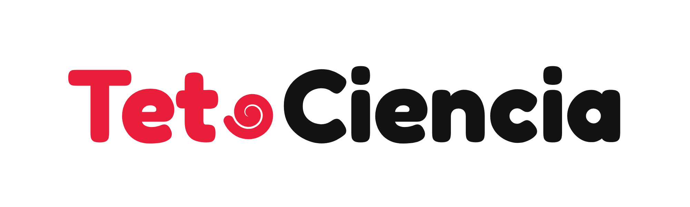

EL CANAL DE LOS PAPUS
¡Apoya el canal!
El mundo Vocaloid,
contado por los Vocaloids
¡Únete a los Papus!
Puerro · Atún · Baguette · Celular · Triple Baka
Detrás del escenario
con GyroP y los Vocaloids

El mundo Vocaloid, por GyroP
¡Únete a los Papus!
Membresías · Videos personalizados
¡Únete a los Papus!
✦
✦
✦
✦